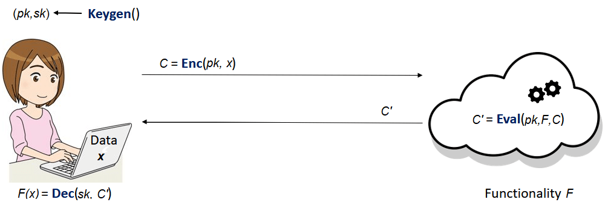
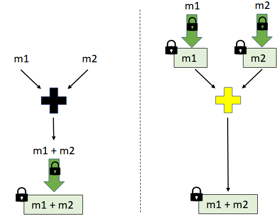
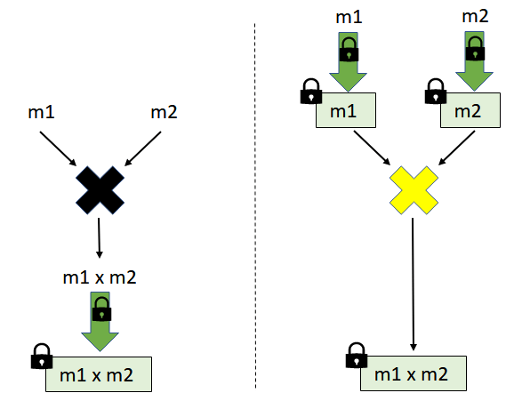
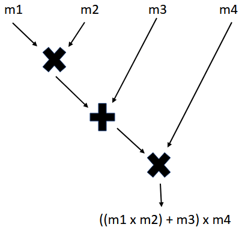
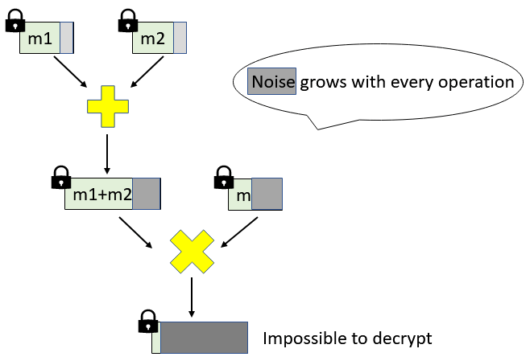
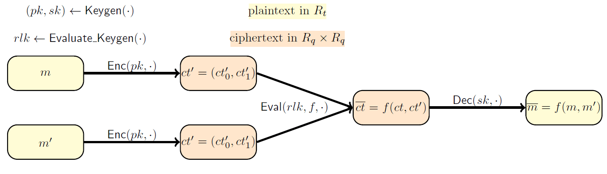
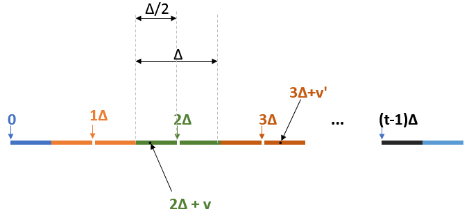

Motivation: We made this blog post as self-contained as possible, even though it was initially thought as a follow-up of this tutorial given by OpenMined. The starting point of our Python implementation is this github gist, which follows the Homomorphic Encryption scheme from [FV12]. The motivation behind our implementation was for us to understand in detail the two techniques of [FV12] used for ciphertext multiplication, namely relinearization and modulus-switching. This essential operation of ciphertext multiplication was missing in the previous implementation. We thought we might share this understanding through a blog post as well since it may be of interest to anyone using the [FV12] scheme in TenSeal or Seal libraries.
Disclaimer: Our toy implementation is not meant to be secure or optimized for efficiency. We did it to better understand the inner workings of the [FV12] scheme, so you can use it as a learning tool. Our full implementation can be found here.
Curious about how to work with data you can't see? In the first part of this blog post we are going to broadly explain what Homomorphic Encryption is and some closely related concepts. In the second part we will follow an example of such a scheme, namely the [FV12] scheme, and discuss some of the details of our implementation.
1. What is Homomorphic Encryption?
Homomorphic Encryption (HE) enables a user to perform meaningful computations on sensitive data while ensuring the privacy of the data. This may sound paradoxical to anyone who has ever worked with encrypted data before: if you want to perform useful computations on the encrypted data (e.g. encrypted under classical algorithms like AES), you need to decrypt it first. But once decryption takes place, the privacy of the data is compromised. So how is it possible for HE to overcome this seeming contradiction? 🔮 Well, the solution is highly non-trivial, as it took the cryptographic community more than 30 years to come up with a construction. The first solution was proposed by Craig Gentry in 2009 and was of theoretical interest only. Since then, a lot of research has been done (e.g. [BGV11], [FV12], [CKKS16], [FHEW], [TFHE], [GSW13]) to make these ideas more practical. By the end of this post you should have a basic understanding of how such a construction may work.
Besides the traditional encryption (), decryption () and key generation () algorithms, an HE scheme also uses an evaluation algorithm (). This is the distinguishing feature that makes computations on encrypted data possible. 💥 Let's consider the following example: Alice holds some personal information (e.g. her medical records and her family's medical history). There is also a company that makes very good predictions based on this kind of information, using a refined model, expressed as the functionality (e.g. a well chosen machine learning model). On one hand, Alice is very interested in these predictions but is also reluctant to trust the company with her sensitive information. On the other hand, the company can't just give their model to Alice to make the predictions herself. A solution using Homomorphic Encryption is given in the picture below. Some important things to notice are:
- Alice sends her data encrypted, so the company never learns anything about .
- Computing on the encrypted data does not involve Alice's secret key . Only her public key is used.
- To obtain as the encryption of , the evaluation algorithm uses the description of to do computations on (which encrypts ).
- By using her secret key, , Alice manages to recover the information that interests her, namely .

A closer look at the Eval algorithm 🔎
All the existing HE constructions are homomorphic with respect to two basic operations: some kind of addition and some kind of multiplication (e.g. and over the integers or the binary operations and , etc.). What we mean is that the scheme allows the efficient computation of from the individual ciphertexts and such that the decryption of yields .

Analogously, the ciphertext corresponding to multiplication, that decrypts to , is efficiently computable from the individual ciphertexts and , respectively.

There are classical examples of encryption schemes that are homomorphic with respect to only *one* operation.
For instance:
- the RSA encryption: is multiplicatively homomorphic as
- the El-Gamal encryption: . It is easy to verify that the multiplicative property holds:
All the existing HE schemes support only two types of computations on the encrypted data: some forms of addition and multiplication. This means that the algorithm works only for functionalities that can be expressed using additions () and multiplications (). Another way of saying this is that HE schemes support only arithmetic circuits with addition/multiplication gates. Below we can view as an arithmetic circuit the functionality .

Why focus on homomorphisms with respect to two operations?
In principle, any functionality can be expressed using only two basic operations. For example, any binary circuit can be obtained using NAND gates exclusively. In turn, a NAND operation consists of one addition and one multiplication: , for any bits .
💡 Therefore it is enough to have an HE scheme that supports an unlimited number of additions and multiplications to be able to make any efficient computation we can think of on encrypted data.
Homomorphic Encryption and "noisy" ciphertexts
The most practical HE constructions rely on the hardness of the Ring Learning With Errors (RLWE) problem for their security, as is the case with many lattice-based cryptographic constructions. The inherent "noise" of the RLWE problem is inherited by all the schemes that are based on it. In particular, this "noise" element is present in every HE ciphertext and has a great impact on the parameters of the scheme.

The noise grows with every addition or multiplication we do on the ciphertexts. This is very relevant as decryption stops working correctly once the noise exceeds a certain threshold.
Because of this phenomenon, the number of multiplications and additions that can be carried out correctly on the ciphertext is limited. 💥 The parameters of such a scheme can be generated such that it can handle a minimum number of operations. But this minimum number must be decided in advance to set the parameters accordingly. We usually call such a scheme Somewhat Homomorphic Encryption (SHE) scheme. When the construction allows an unbounded number of operations, we call such a scheme Fully Homomorphic Encryption (FHE). Even though we are not going to discuss it any further, we have to mention that it's possible to obtain FHE from SHE. In fact, Gentry showed how to transform any SHE (that can homomorphically evaluate its own decryption circuit) to FHE, through a computationally expensive process called bootstrapping. For applications that don't require many homomorphic evaluations SHE is preferred, as we want to avoid the computational overhead of the boostrapping.
2. A SHE scheme example
For the remaining of this blog post we will try to make the concepts that we have already presented more concrete, by discussing a toy implementation of the SHE scheme construction of [FV12]. Our main goal is to understand how relinearization and modulus-switching are used to obtain ciphertext multiplication.
Notations: For an integer , by we mean the set . We denote by the remainder of modulo . For example . When rounding to the nearest integer, we use . The basic elements we work with will not be integers, but merely polynomials with integer coefficients. We also work with noisy polynomials, whose coefficients are sampled according to some error distribution . We bound such errors by their largest absolute value of their coefficients, denoted as .
Quick recap on working with polynomials
The HE scheme we are going to describe deals with adding and multiplying polynomials. Here we present a quick example of how to work with polynomials, so that we all have the same starting point. If you already know how to do this, you can skip it.
First thing, let's add and multiply polynomials modulo some polynomial . This "modulo " thing simply means that we add and multiply the polynomials in the usual way, but we take the remainders of the results when divided by . When we do these additions and multiplications , we sometimes say in a fancy way that we are working in the ring of reduced polynomials.💍
Let's take . If we look at , then . Therefore, when taking the reminder we get . For faster computations you can use this trick: when making , simply replace by , by and so on.
Let's consider two polynomials and . Then:
Here nothing special happened. Let's multiply them:
These operations are implemented here and make use of the cool Numpy library:
import numpy as np
from numpy.polynomial import polynomial as poly
#------Functions for polynomial evaluations mod poly_mod only------
def polymul_wm(x, y, poly_mod):
"""Multiply two polynomials
Args:
x, y: two polynomials to be multiplied.
poly_mod: polynomial modulus.
Returns:
A polynomial in Z[X]/(poly_mod).
"""
return poly.polydiv(poly.polymul(x, y), poly_mod)[1]
def polyadd_wm(x, y, poly_mod):
"""Add two polynomials
Args:
x, y: two polynomials to be added.
poly_mod: polynomial modulus.
Returns:
A polynomial in Z[X]/(poly_mod).
"""
return poly.polydiv(poly.polyadd(x, y), poly_mod)[1]
Now let's go one step further and see how we perform these operations of polynomials not just modulo , but also modulo some integer . As you might expect, the coefficients of these polynomials are also reduced modulo , so they always take integer values from to This time, we say that we are working the ring of reduced polynomials . 💍
Let's take the previous example, , , and consider . We can think of and as already taken . If we take them further modulo , then and . Moreover,
and
where at the last but one equality we performed modulo and at the last one, modulo .
These operations already mentioned are and implemented here.
The Fan-Vercauteren ([FV12]) scheme
Next, we recall the basic (, , ) algorithms of the [FV12] scheme. These (almost identical) algorithms have already been described here, but for the sake of completeness, we present them as well. Then we will explain in detail the core of the algorithm: the addition and multiplication of the ciphertexts. Spoiler alert: We will primarily focus on the two Relinearization techniques that enable ciphertext multiplication.
Let be power of 2. We call a positive integer the plaintext modulus and a positive integer as the ciphertext modulus. We set . The scheme involves adding and multiplying polynomials in , on the plaintext side, and adding and multiplying polynomials in , on the ciphertext side. We also denote by the ring
Disclaimer: From now on all polynomial operations are assumed to be mod , even if we don't mention it every time.
Here is the high level of the scheme:

➡️ : The secret key is a secret binary polynomial in , i.e. its coefficients are either 0 or 1. The public key is created as follows: we sample uniformly over and an error according to some error distribution over and output .
Notice that hardness of the RLWE problem prevents the computation of the secret from the public key.
The way we generate the uniform polynomials and the binary polynomials is implemented as and as respectively. The error distribution is usually taken as a discretized variant of the Normal distribution, over , and is implemented as . They can be found here.
def keygen(size, modulus, poly_mod, std1):
"""Generate a public and secret keys.
Args:
size: size of the polynoms for the public and secret keys.
modulus: coefficient modulus.
poly_mod: polynomial modulus.
std1: standard deviation of the error.
Returns:
Public and secret key.
"""
s = gen_binary_poly(size)
a = gen_uniform_poly(size, modulus)
e = gen_normal_poly(size, 0, std1)
b = polyadd(polymul(-a, s, modulus, poly_mod), -e, modulus, poly_mod)
return (b, a), s
➡️ : To encrypt a plaintext , we let , sample according to over and output the ciphertext
Due to the RLWE assumption, the ciphertexts "look" uniformly random to a possible attacker, so they don't reveal any information about the plaintext.
In the piece of code below, the message we want to encrypt, , is an integer vector of length at most , with entries in the set . Before we encode it as a polynomial in , we pad it with enough zeros to make it a length vector.
def encrypt(pk, size, q, t, poly_mod, m, std1):
"""Encrypt an integer vector pt.
Args:
pk: public-key.
size: size of polynomials.
q: ciphertext modulus.
t: plaintext modulus.
poly_mod: polynomial modulus.
m: plaintext message, as an integer vector (of length <= size) with entries mod t.
Returns:
Tuple representing a ciphertext.
"""
m = np.array(m + [0] * (size - len(m)), dtype=np.int64) % t
delta = q // t
scaled_m = delta * m
e1 = gen_normal_poly(size, 0, std1)
e2 = gen_normal_poly(size, 0, std1)
u = gen_binary_poly(size)
ct0 = polyadd(
polyadd(
polymul(pk[0], u, q, poly_mod),
e1, q, poly_mod),
scaled_m, q, poly_mod
)
ct1 = polyadd(
polymul(pk[1], u, q, poly_mod),
e2, q, poly_mod
)
return (ct0, ct1)
➡️ : Given a ciphertext , we decrypt it using the secret key as follows:
⛔ Let's stop for a bit and check together how the algorithm works. The intuition behind it is that is "small". This implies that is "close" to the scaled message . To recover the message , we get rid of and then apply rounding to shave off the "small" noise. Let's check that this intuition actually works.
First, we set the notation , which we'll frequently use for the rest of the post. If we perform this computation, we will end up getting a noisy scaled variant of the plaintext, namely !
You can click here to see why this happens.
If we go back to see how and were defined, we get:
which is nothing but the scaled plaintext with some "small" noise .
Because we always have , reducing it has no effect (e.g. ). As long as the noise , we can always recover the correct .

For example, in the picture above, any green point will decrypt to when we scale it by and round it. Analogously, any dark-brown point will decrypt to .
We can implement this evaluation, as below, by performing polynomial operations in . You will see that this equation,
which we will call the decryption equation, becomes really useful in deriving ways of computing on ciphertexts. Here we provide the code for the algorithm:
def decrypt(sk, q, t, poly_mod, ct):
"""Decrypt a ciphertext.
Args:
sk: secret-key.
size: size of polynomials.
q: ciphertext modulus.
t: plaintext modulus.
poly_mod: polynomial modulus.
ct: ciphertext.
Returns:
Integer vector representing the plaintext.
"""
scaled_pt = polyadd(
polymul(ct[1], sk, q, poly_mod),
ct[0], q, poly_mod
)
decrypted_poly = np.round(t * scaled_pt / q) % t
return np.int64(decrypted_poly)
Homomorphic operations of [FV12]
As explained in the first part, the algorithm works only for functionalities that can be expressed using addition or multiplication .
Let's take two ciphertexts and . We want to see how to construct ciphertexts that decrypt both the addition, , and the multiplication, . Also, keep in mind that when performing operations on and , we are actually doing them modulo and modulo , since these are the plaintext operations from .
Let's write the decryption equations of and :
➡️ Addition: If we simply add the decryption equations, we get
But wait a sec, we need to decrypt to modulo ! Notice that , for some binary polynomial . Using the notation (this is just the remainder of divided by ) we get:
where .Click here if you want to see why this follows.
This suggests to set the new ciphertext as , which can be computed without the knowledge of the secret key . Therefore, decrypts to the sum, , as long as the new "noise", , is smaller than .
💡 The noise growth for addition is quite slow as , where is an upper bound on the "noise" of the ciphertexts that were added. This means we can probably do many additions before decryption stops working.
To add ciphertexts, it seems like we only need to add polynomials in . So, ciphertext addition is a piece of cake 🍰.
def add_cipher(ct1, ct2, q, poly_mod):
"""Add a ciphertext and a ciphertext.
Args:
ct1, ct2: ciphertexts.
q: ciphertext modulus.
poly_mod: polynomial modulus.
Returns:
Tuple representing a ciphertext.
"""
new_ct0 = polyadd(ct1[0], ct2[0], q, poly_mod)
new_ct1 = polyadd(ct1[1], ct2[1], q, poly_mod)
return (new_ct0, new_ct1)
➡️ Multiplication: Producing a new ciphertext that decrypts the product of the two messages is not that easy. But we should still try 🤞. The first idea that comes to mind is to simply multiply the decryption equations. It worked for addition, so maybe it works here as well.
If we scale by to get rid of one , we get something that looks like what we want.
It seems we are on the right track. Let's examine these expressions further. Recall the notations and Both of them are linear in , but their multiplication is quadratic in :
which we will write, in short, as
But what about the right hand side? Keep in mind that we work with plaintexts , so we should take with coefficients modulo . Therefore, we can apply the same trick as we did for addition: we divide by and write , where is an integer polynomial. Skipping a lot of details, we end up with:
for a polynomial with rational coefficients. Looks like we're getting closer to obtaining the decryption equation. We can now write the original expression as:
Hm.. these coefficients look like rational polynomials. Recall that the ciphertext has integer polynomials as elements. So we round each coefficient appearing in the left hand side to their nearest integers and then reduce the whole equation modulo :
where is a "small" integer polynomial, that represents the "noise" after one multiplication.
💡 The noise growth for multiplication grows a lot faster: where is an upper bound for the "noise" of the ciphertexts that were multiplied. We refer the enthusiastic reader for more details to [[FV12] Lem. 2].
Phew, seems like we are done: we can consider as a ciphertext decrypting to the tuple of scaled and rounded coefficients mod from left hand side of , denoted by . Of course, for a correct decryption, should have small enough coefficients. You can see below how these coefficients are computed in Python:
def multiplication_coeffs(ct1, ct2, q, t, poly_mod):
"""Multiply two ciphertexts.
Args:
ct1: first ciphertext.
ct2: second ciphertext
q: ciphertext modulus.
t: plaintext modulus.
poly_mod: polynomial modulus.
Returns:
Triplet (c0,c1,c2) encoding the multiplied ciphertexts.
"""
c_0 = np.int64(np.round(polymul_wm(ct1[0], ct2[0], poly_mod) * t / q)) % q
c_1 = np.int64(np.round(polyadd_wm(polymul_wm(ct1[0], ct2[1], poly_mod), polymul_wm(ct1[1], ct2[0], poly_mod), poly_mod) * t / q)) % q
c_2 = np.int64(np.round(polymul_wm(ct1[1], ct2[1], poly_mod) * t / q)) % q
return c_0, c_1, c_2
But, as a popular movie character would say, "Houston, we have a problem". This tuple of coefficients has size 3, not 2 as the usual ciphertext. Moreover, the size of such tuple will grow linearly in the number of further multiplications performed on the ciphertexts. In order to restore the size of the ciphertext as 2, we will make use of the so called relinearization technique. 💥
Relinearization
💡 The idea of Relinearization is to reduce the triplet to a ciphertext pair that recovers when decrypted with the usual decryption algorithm. We would like to produce a pair , without using the secret , such that: , where is a "small" error. The correct decryption will be possible, as the "small" error will vanish because of the rounding in decryption.
As the name suggests it, we transform the degree 2 polynomial, into a linear polynomial, i.e. of degree 1. This involves giving extra info about . Using a special public key, called relinearization key, we can linearize (up to some small error) as
Therefore, by Equation , we can get a standard ciphertext pair as
that correctly decrypts to , as you can see below:
where Therefore, decrypts correctly to if is less than . So yay! we finally know how to get a ciphertext encoding multiplication!
Different versions of relinearization
To complete this discussion, we need to see how to construct the linear approximation of and find out what the relinearization key is about. For this, we will go a bit deeper into (technical) details. Don't panic, we'll take you step by step. 😄
We are going to present two versions of linearizing . First, keep in mind that should not be known, so we give the relinearization key as a masked version of .
Let's think of the following situation: say we include in the public key the following relinearization key:
for some uniform in and a small error .
❗ Intuitively, the secret is hidden by something that looks like an RLWE sample. Notice that,
To obtain the approximation of we should multiply the above expression by . By doing so, we end up with the rather large-norm term , due to the size of the coefficients of . We cannot allow such a large "noise" as it will interfere with decryption. To avoid this "noise" blow-up we will employ two techniques described below.
💥 Relinearization: Version 1
One strategy is to use base decomposition of the coefficients of to slice into components of small norm. To do this, we pick a base and write each coefficient of in this base. Recall that is a integer polynomial, modulo , so of degree at most . If we write as a polynomial:
then we can decompose each coefficient in base . Notice that since has coefficients in , the maximum power appearing in these representations is , where . For base decomposition we use the function :
def int2base(n, b):
"""Generates the base decomposition of an integer n.
Args:
n: integer to be decomposed.
b: base.
Returns:
array of coefficients from the base decomposition of n
with the coeff[i] being the coeff of b ^ i.
"""
if n < b:
return [n]
else:
return [n % b] + int2base(n // b, b)
The relinearization key, in this version, consists of masked variants of instead of . More precisely, for , this is defined as follows:
for chosen uniformly in and chosen according to the distribution over (yep, same error distribution as in the description of the scheme). Below you can find the implementation of the function that generates the evaluation (relinearization) key .
def evaluate_keygen_v1(sk, size, modulus, T, poly_mod, std2):
"""Generate a relinearization key using version 1.
Args:
sk: secret key.
size: size of the polynomials.
modulus: coefficient modulus.
T: base.
poly_mod: polynomial modulus.
std2: standard deviation for the error distribution.
Returns:
rlk: relinearization key.
"""
n = len(poly_mod) - 1
l = np.int(np.log(modulus) / np.log(T))
rlk0 = np.zeros((l + 1, n), dtype=np.int64)
rlk1 = np.zeros((l + 1, n), dtype=np.int64)
for i in range(l + 1):
a = gen_uniform_poly(size, modulus)
e = gen_normal_poly(size, 0, std2)
secret_part = T ** i * poly.polymul(sk, sk)
b = np.int64(polyadd(
polymul_wm(-a, sk, poly_mod),
polyadd_wm(-e, secret_part, poly_mod), modulus, poly_mod))
b = np.int64(np.concatenate( (b, [0] * (n - len(b)) ) )) # pad b
a = np.int64(np.concatenate( (a, [0] * (n - len(a)) ) )) # pad a
rlk0[i] = b
rlk1[i] = a
return rlk0, rlk1
Now, given , let's look at how we compute the linear approximation of . Let the polynomials be the base decomposition of , such that:
We can get the linear approximation given by , where:
Therefore, where is an error term from .
Click here for more details.
💡 By doing base decomposition we get a "small" relinearization noise: where is an upper bound on the errors .
❓ Now the question is how to compute the polynomials . The coefficients of these polynomials prove to be nothing but the columns of the matrix .
If you're curious to see why, click here:
So far, we have stored the representations of each coefficient of $c_2$, $c_2[i]$, let's say as rows in an $n \times (\ell+1)$ matrix $\mathtt{Reps}$. Therefore
If we multiply this by , we get:
Summing up all these for each , on the left hand side we actually get :
So, if we denote the above sums by polynomials , we simply get
Phew, what a relief! Notice that the coefficients for each polynomial are given by the -th column of .
So after all this math, we finally got the linear approximation of and thus, we can derive the standard ciphertext encoding the multiplication of the plaintexts. Here comes the code:
def mul_cipher_v1(ct1, ct2, q, t, T, poly_mod, rlk0, rlk1):
"""Multiply two ciphertexts.
Args:
ct1: first ciphertext.
ct2: second ciphertext
q: ciphertext modulus.
t: plaintext modulus.
T: base
poly_mod: polynomial modulus.
rlk0, rlk1: output of the EvaluateKeygen_v1 function.
Returns:
Tuple representing a ciphertext.
"""
n = len(poly_mod) - 1
l = np.int64(np.log(q) / np.log(T)) #l = log_T(q)
c_0, c_1, c_2 = multiplication_coeffs(ct1, ct2, q, t, poly_mod)
c_2 = np.int64(np.concatenate( (c_2, [0] * (n - len(c_2))) )) #pad
#Next, we decompose c_2 in base T:
#more precisely, each coefficient of c_2 is decomposed in base T such that c_2 = sum T**i * c_2(i)
Reps = np.zeros((n, l + 1), dtype = np.int64)
for i in range(n):
rep = int2base(c_2[i], T)
rep2 = rep + [0] * (l + 1 - len(rep)) #pad with 0
Reps[i] = np.array(rep2, dtype=np.int64)
# Each row Reps[i] is the base T representation of the i-th coefficient c_2[i].
# The polynomials c_2(j) are given by the columns Reps[:,j].
c_20 = np.zeros(shape=n)
c_21 = np.zeros(shape=n)
# Here we compute the sums: rlk[j][0] * c_2(j) and rlk[j][1] * c_2(j)
for j in range(l + 1):
c_20 = polyadd_wm(c_20, polymul_wm(rlk0[j], Reps[:,j], poly_mod), poly_mod)
c_21 = polyadd_wm(c_21, polymul_wm(rlk1[j], Reps[:,j], poly_mod), poly_mod)
c_20 = np.int64(np.round(c_20)) % q
c_21 = np.int64(np.round(c_21)) % q
new_c0 = np.int64(polyadd_wm(c_0, c_20, poly_mod)) % q
new_c1 = np.int64(polyadd_wm(c_1, c_21, poly_mod)) % q
return (new_c0, new_c1)
💥 Relinearization: Version 2
This version is much simpler and cleaner than the previous one (yay!) and uses the so-called modulus switching technique. Recall that if we try to naively mask in the reliniarization key, then there is a large blow-up in the noise because of the multiplication. We want to avoid this to get a correct decryption.
In this version we mask modulo a a different modulus, , with a much larger , as shown below.
for a uniform in and drawn according to an error distribution over Remember that our goal is to produce an approximation of . The idea is that when we scale from back to , the noise gets divided by the large integer , significantly reducing its size.
In a safe implementation the distribution should be distinct from and its parameters should be carefully chosen for security reasons. Since security is not our main goal in this blog post, you can check the paper for further details.
def evaluate_keygen_v2(sk, size, modulus, poly_mod, extra_modulus, std2):
"""Generate a relinearization key using version 2.
Args:
sk: secret key
size: size of the polynomials.
modulus: coefficient modulus.
poly_mod: polynomial modulus.
extra_modulus: the "p" modulus for modulus switching.
st2: standard deviation for the error distribution.
Returns:
rlk0, rlk1: relinearization key.
"""
new_modulus = modulus * extra_modulus
a = gen_uniform_poly(size, new_modulus)
e = gen_normal_poly(size, 0, std2)
secret_part = extra_modulus * poly.polymul(sk, sk)
b = np.int64(polyadd_wm(
polymul_wm(-a, sk, poly_mod),
polyadd_wm(-e, secret_part, poly_mod), poly_mod)) % new_modulus
return b, a
The linear approximation of can be computed from the pair:
Indeed, for a "small" error in .
For an intuition of why this happens, click here.
Skipping some details, this holds true because of the following simple computation:where such that .
We're cheating a bit here, since the pair involves the roundings of the terms to their nearest integers. Still, we're not far from the truth, since for any real number , differs from by a small quantity . (we can also extend this coefficient-wise to polynomials).
💡 We get a "small" relinearization noise, , for large
Next, we provide the easy code implementation for multiplying ciphertexts using this version.
def mul_cipher_v2(ct1, ct2, q, t, p, poly_mod, rlk0, rlk1):
"""Multiply two ciphertexts.
Args:
ct1: first ciphertext.
ct2: second ciphertext.
q: ciphertext modulus.
t: plaintext modulus.
p: modulus-swithcing modulus.
poly_mod: polynomial modulus.
rlk0, rlk1: output of the EvaluateKeygen_v2 function.
Returns:
Tuple representing a ciphertext.
"""
c_0, c_1, c_2 = multiplication_coeffs(ct1, ct2, q, t, poly_mod)
c_20 = np.int64(np.round(polymul_wm(c_2, rlk0, poly_mod) / p)) % q
c_21 = np.int64(np.round(polymul_wm(c_2, rlk1, poly_mod) / p)) % q
new_c0 = np.int64(polyadd_wm(c_0, c_20, poly_mod)) % q
new_c1 = np.int64(polyadd_wm(c_1, c_21, poly_mod)) % q
return (new_c0, new_c1)
Version 1 vs. Version 2 🥊
Recall that we can derive a fresh standard ciphertext that decrypts to as , since
where and .
We need to make sure that decrypts correctly to . For this, it suffices to choose the parameters such that
Now that we have two versions of relinearization, which help us in deriving , we may wonder which one we can use:
| Relinearization | Size of (in bits) | Bound of |
|---|---|---|
| Version 1 | ||
| Version 2 |
➡️ size of : Version 1 gives a relinearization key as pairs of polynomials in whereas Version 2 gives just one such pair. Recall that and see that this decreases as long as the base increases.
➡️ bound of : The upper bounds of for both versions are according to [FV12], Lem.3. We consider as a bound taken so that the error distribution takes values in with high probability. We similarly define for the case of the error distribution , used in Version 2. Notice that for Version 1, a larger leads to more noise (but smaller ), whereas in Version 2, a larger leads to smaller noise (but larger ). For choosing the parameters in safe implementation, we refer the reader to [FV12] Sec. Realinearisation Version 2.
Setting the parameters
We set the parameters for our toy implementation just to make sure it always correctly decrypts at least one ciphertext multiplication. For that, we made sure that . In practice, for the current choice it seems that decryption always works for ciphertext multiplications when using V2 relinearization, for example. This is due to the fact that the theoretical bounds are worst-case bounds. For the same parameters we can make hundreds of addition (in practice it seems that decryption works even for additions 😮). Ciphertext addition is almost for free in terms of noise growth! 💥 We invite you to play around with the parameters and the bounds and try to see how many multiplications you can get (as they are the costly operations).
Let's play! 🎉
Now we can multiply ciphertexts, as we have implemented two versions of this: and , using relinearization. We can further add ciphertexts by using . So yay! we can finally perform computations on encrypted data.
Bonus: if you're curious, you can try computing more complex (polynomial) operations on encrypted data, such as multiplying three ciphertexts. Here we only wanted to show how to perform one multiplication. For more levels of multiplications, you should set the parameters as in [FV12, Thm1] so that you decrypt correctly 😉.
Bonus2: you can also perform plain operations, such as adding or multiplying plaintexts to ciphertexts, by using and (with a reduced noise growth) both from here. For further details on how these work, you should check this. 🤓
So what are you waiting for? Go check it out!
import rlwe_he_scheme_updated as rlwe_updated
import numpy as np
if __name__ == '__main__':
# Scheme's parameters
# polynomial modulus degree
n = 2 ** 2
# ciphertext modulus
q = 2 ** 14
# plaintext modulus
t = 2
# base for relin_v1
T = int(np.sqrt(q))
#modulusswitching modulus
p = q ** 3
# polynomial modulus
poly_mod = np.array([1] + [0] * (n - 1) + [1])
#standard deviation for the error in the encryption
std1 = 1
#standard deviation for the error in the evaluateKeyGen_v2
std2 = 1
# Keygen
pk, sk = rlwe_updated.keygen(n, q, poly_mod, std1)
#EvaluateKeygen_version1
rlk0_v1, rlk1_v1 = rlwe_updated.evaluate_keygen_v1(sk, n, q, T, poly_mod, std1)
#EvaluateKeygen_version2
rlk0_v2, rlk1_v2 = rlwe_updated.evaluate_keygen_v2(sk, n, q, poly_mod, p, std2)
# Encryption
pt1, pt2 = [1, 0, 1, 1], [1, 1, 0, 1]
cst1, cst2 = [0, 1, 1, 0], [0, 1, 0, 0]
ct1 = rlwe_updated.encrypt(pk, n, q, t, poly_mod, pt1, std1)
ct2 = rlwe_updated.encrypt(pk, n, q, t, poly_mod, pt2, std1)
print("[+] Ciphertext ct1({}):".format(pt1))
print("")
print("\t ct1_0:", ct1[0])
print("\t ct1_1:", ct1[1])
print("")
print("[+] Ciphertext ct2({}):".format(pt2))
print("")
print("\t ct1_0:", ct2[0])
print("\t ct1_1:", ct2[1])
print("")
# Evaluation
ct3 = rlwe_updated.add_plain(ct1, cst1, q, t, poly_mod)
ct4 = rlwe_updated.mul_plain(ct2, cst2, q, t, poly_mod)
#ct5 = (ct1 + cst1) + (cst2 * ct2)
ct5 = rlwe_updated.add_cipher(ct3, ct4, q, poly_mod)
# ct6 = ct1 * ct2
ct6 = rlwe_updated.mul_cipher_v1(ct1, ct2, q, t, T, poly_mod, rlk0_v1, rlk1_v1)
ct7 = rlwe_updated.mul_cipher_v2(ct1, ct2, q, t, p, poly_mod, rlk0_v2, rlk1_v2)
# Decryption
decrypted_ct3 = rlwe_updated.decrypt(sk, q, t, poly_mod, ct3)
decrypted_ct4 = rlwe_updated.decrypt(sk, q, t, poly_mod, ct4)
decrypted_ct5 = rlwe_updated.decrypt(sk, q, t, poly_mod, ct5)
decrypted_ct6 = rlwe_updated.decrypt(sk, q, t, poly_mod, ct6)
decrypted_ct7 = rlwe_updated.decrypt(sk, q, t, poly_mod, ct7)
print("[+] Decrypted ct3=(ct1 + {}): {}".format(cst1, decrypted_ct3))
print("[+] Decrypted ct4=(ct2 * {}): {}".format(cst2, decrypted_ct4))
print("[+] Decrypted ct5=(ct1 + {} + {} * ct2): {}".format(cst1, cst2, decrypted_ct5))
print("[+] pt1 + {} + {} * pt2): {}".format(cst1, cst2, rlwe_updated.polyadd(
rlwe_updated.polyadd(pt1, cst1, t, poly_mod),
rlwe_updated.polymul(cst2, pt2, t, poly_mod),
t, poly_mod)))
print("[+] Decrypted ct6=(ct1 * ct2): {}".format(decrypted_ct6))
print("[+] Decrypted ct7=(ct1 * ct2): {}".format(decrypted_ct7))
print("[+] pt1 * pt2: {}".format(rlwe_updated.polymul(pt1, pt2, t, poly_mod)))